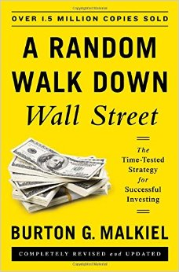
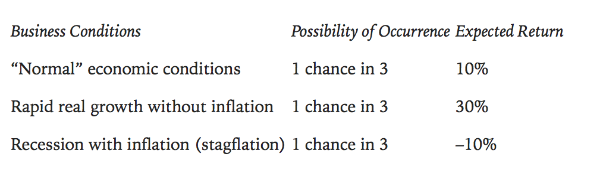
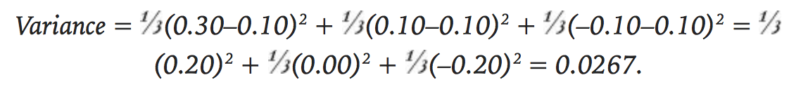
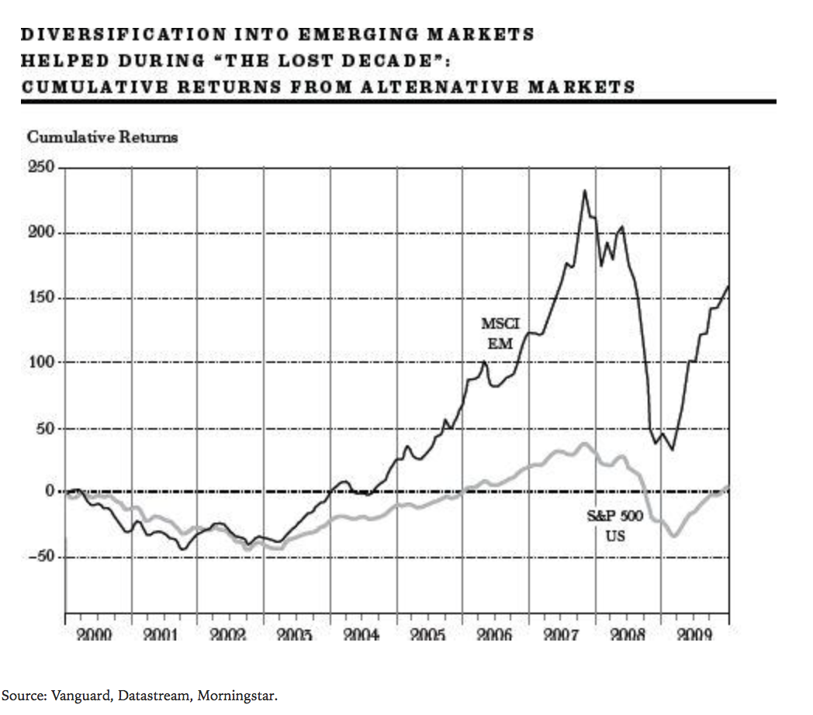

Modern Portfolio Theory
A Random Walk Down Wall Street
Outline
So Far
we have seen many theoriesFirm foundation
Castle in the air
created and used by professionals
Academics have earned reputations by attacking these theories
Cannot be relied on to yield extraordinary profits
a new strategy was needed
Academic community went busy with creating their own stock market valuation theories
"New investment technology"
introducing
Modern portfolio theory
Very basic
Widely followed on Wall Street
The role of risk
Efficient-market hypothesis explains why random walk is possible
Stock market is incredible in adjusting to new information - no one can predict its exact future course
Your guess is as good as an ape, a stockbroker, or even Carl Icahn
Academics says the way to beat the market is not to exercise superior clairvoyance
but to assume greater risk, because risk alone determines the degree of returns.
What is risk?
"The possibility of suffering harm or loss"
One-year Treasury bills, yields 2 percent and hold them until they mature
Common stock in my local electric utility for one year, anticipating a 5 percent dividend.
Investment risk: The chance that expected security returns will not materialize, and in particular, will fall in price.
Financial risk has generally been defined as the variance or standard deviation of returns
A security, whose returns are not likely to depart much from its expected return has little risk.
A security, whose returns from year to year are quite volatile, has higher risk.

Suppose you buy a stock from which you expect these hypothetical returns
A third of the past years went with normal economic conditions, a third of them with rapid growth and a third of them with recession.
“Expected return = 1/3(0.30) + 1/3(0.10) + 1/3(–0.10) = 0.10.”
Yearly returns will be quite variable, from 30% to -10% , so we need to calculate how much it varies.
 std.dev: 0.1634
The greater the variance, the greater the possibilities for disappointment.
Symmetric distribution
2/3 of monthly returns fall within 1 stddev.
95% of monthly returns fall within 2 stddev.
Mean is about 2.5%
Std.Dev: 4.5%
-2% to 7%, 1 stddev
-6.5% to 11.5%, 2 stddev
Higher standard deviation
Higher the risk
Higher the returns
or maybe not.How do we reduce this risk factor?
Remember Modern Portfolio Theory?
All investors are risk-averse.
High returns
Guaranteed outcomes.
The theory tells investors how to combine stocks in their portfolios to give them the least risk possible, consistent with the return they seek.
Conjured in 1950s by Harry Markowitz
The math behind is complex.
Risky portfolios can be put together in such a way that the portfolio as a whole could be less risky than the individual stocks in it.
Suppose an island economy with only two businesses.
Large resort with beaches, tennis courts and a golf course.
Umbrella manufacturer
Weather affects them both.
Hypothetical returns
Suppose that on average, one-half of the seasons are sunny and the other is rainy.
An investor(with 2$) who bought stock in the umbrella manufacturer earns 50% half of the time, loses 25% half of the time.
Earns 12.5% on average.
Now suppose instead of buying only one security, he diversifies and puts half of his money(1$) in the umbrella manufacturer and half of his money(1$) on the resort.
In sunny seasons, one dollar investment returns 50 cents from the resort and loses 25 cents from the umbrella business.
In rainy seasons, the opposite happens, and you get 12.5% on average.
| Umbrella Manufacturer | Resort Owner | |
| Rainy Season | 50% | -25% |
| Sunny Season | -25% | 50% |
So what has changed?
We eliminated the risk of weather
Our expected returns are hypothesized with the premise of exactly 6 months of sun and 6 months of rain.
The reality would be quite different.
Negative covariance
As long as there is some lack of paralellism in individual companies, we can reduce risk with diversification
With perfect negative relationship (one company does perfect when the other does very bad) diversification can totally eliminate risk.
Of course it's not this easy.
There may be a recession and people may not buy vacations or umbrellas.
Perfect negative relationship is almost nonexistent.
The lesson to learn
If you buy Ford Motor Co. and its major supplier of tires in a stock portfolio, this diversification may not help you that much.
If Ford's sales go bad, Ford won't buy that many tires, so the supplier goes bad.
High covariance/High correlation
If you buy Ford Motor Co. and a government contractor in a depressed area, diversification may help.
If consumer spending is down, Ford's sales will be down and unemployment will be up.
Government tend to give out contracts to depressed areas in times of high unemployment
Diversification in practice
Can there be too much of a good thing? - William Shakespeare
Is this really really magical?
Nope.
Buying only US stocks reduces the risk 60%
Buying international stock reduces it even more (because of more diverse portfolios)
However after a certain point, it converges into a single risk value.
You have to recognize that the world has changed considerably since Markowitz first put his theory in writing.
Not every economy reacts the same way.
Oil price increase
Bad for Europe, Japan, even US
Not really bad for the Middle East
S&P 500 Index and Morgan Stanley EAFE(Europe, Australasia and Far East) Index of developed foreign countries

Overall portfolio risk is reduced by the addition of a small amount of riskier foreign securities.
Good returns from Japanese automakers balance the poor returns of US automakers
Dollar balances out the European recession.
Globalization increases the correlation coefficiency
Diversification tends to have less effect in general.
But, do not despair.
Diversification helped balance out the investments in 'the lost decade'
Summary
Thank you for sticking with me the whole time.
In portfolio investing, invest diversely between companies with low correlation.
Diversification in investing tends to reduce risks related to your investment.